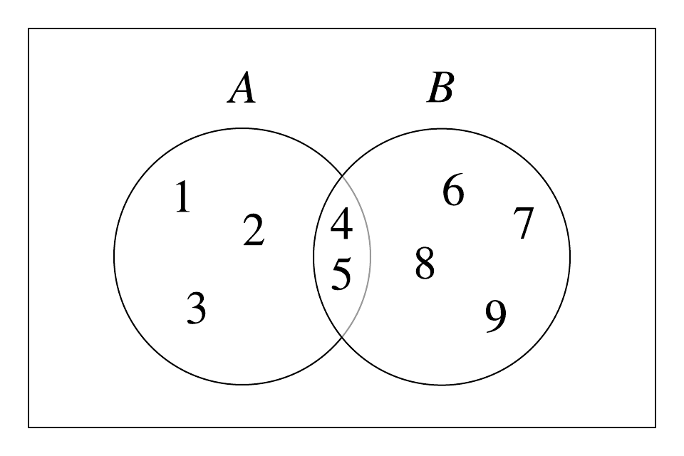
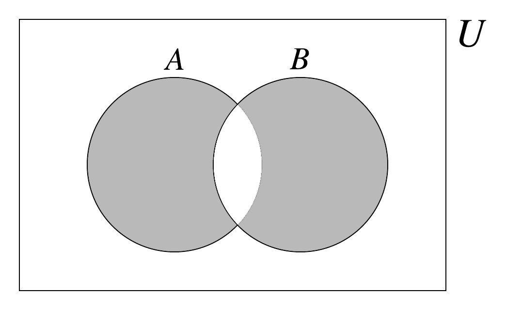

Set symmetric difference
The symmetric difference between two sets \(A\) and \(B\), denoted \(A \bigtriangleup B,\) is the collection of elements \(x\) of \(A\) or \(y\) of \(B\) so that \(x\) is not in \(B\) nor \(y\) is not in \(A\).
\[A \bigtriangleup B = \{x \vert x \in (A \cup B) - (A \cap B)\}\]

Symmetric set difference between two sets \(A = \{1, 2, 3, 4, 5\}\) and \(B = \{4, 5, 6, 7, 8, 9\}\), denoted \(A \bigtriangleup B\), is \(\{1, 2, 3, 6, 7, 8, 9\}.\) \(A \bigtriangleup B\) includes all elements in \(A \cup B\), except their common elements.
Example 1: Let \(A = \{1, 2, 3, 4, 5\}\) and \(B = \{4, 5, 6, 7, 8, 9\}\). Then we notice that the union of the sets \(A\) and \(B\) would be the collection of positive integers from 1 to 9. There are two elements that are in common to both the sets, the elements 4 and 5. Thus, \(A \bigtriangleup B = \{1, 2, 3, 6, 7, 8, 9\}.\)
The symmetric difference of sets \(A\) and \(B\) is illustrated graphically using Venn diagrams.
Another way of phrasing the symmetric difference of sets \(A\) and \(B\) is to say \(A \bigtriangleup B\) is the union of elements that are unique to each of \(A\) and \(B.\) The shaded area in the Venn diagram below represents the symmetric difference of \(A\) and \(B\):

A Venn diagram depicting the symmetric set difference between sets \(A\) and \(B\) (shaded area), which can also be viewed as an exclusive OR (denoted \(\oplus\)) operations.
Using our set notation:
\(A \bigtriangleup B = \{x \vert (x \in A\) and \(x \notin B)\) or \((\)x \in B and x \notin A)}$$
Equivalently:
\[\begin{aligned} A \bigtriangleup B &= (A-B) \cup (B-A) \\ A \bigtriangleup B &= (A \cup B) - (A \cap B) \end{aligned}\]A different way to view symmetric difference \(\bigtriangleup\) is in terms of the exclusive OR operation, which is denoted as \(XOR\) or \(\oplus\).
\[A \bigtriangleup B = \{ x \vert (x \in A) \oplus (x \in B) \}\]\(XOR,\) \(\oplus,\) is a logical binary operation which output values {True, False}. It is the case that \(x \oplus y\) is true only when the input terms \(x\) and \(y\) differ as shown in the truth table below:
| \(x\) | \(y\) | \(x \oplus y\) |
|---|---|---|
F (False) |
F (False) |
F (False) |
F (False) |
T (True) |
T (True) |
T (True) |
F (False) |
T (True) |
T (True) |
T (True) |
F (False) |